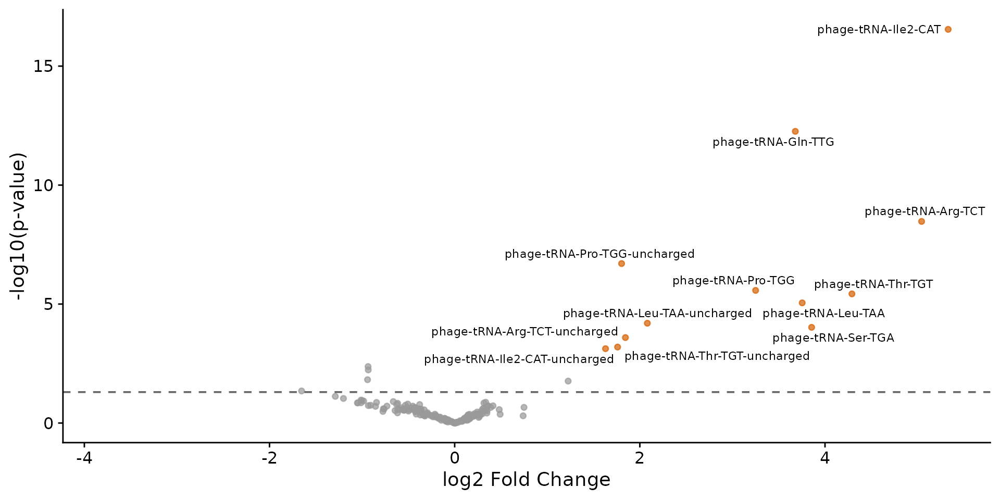
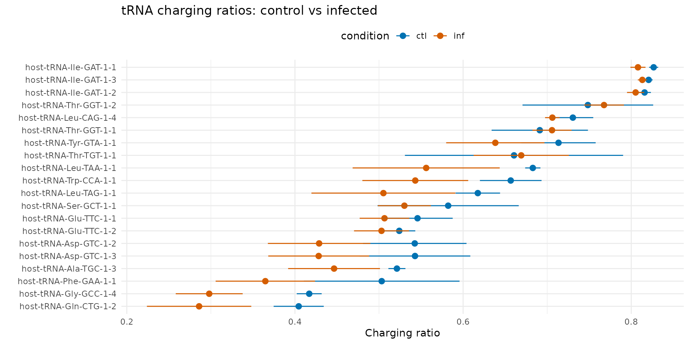
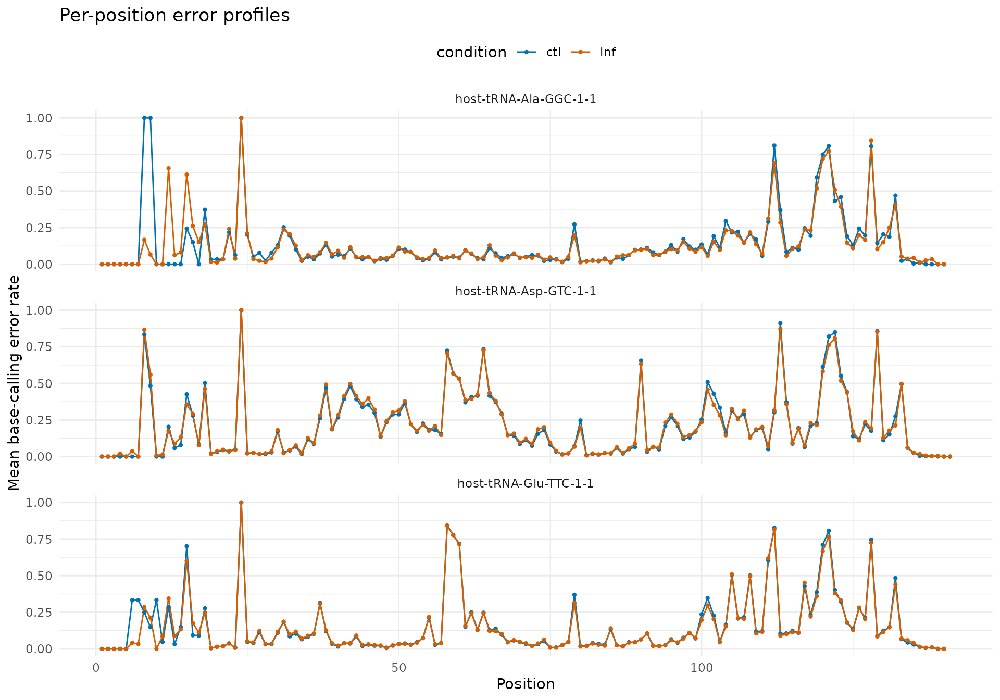
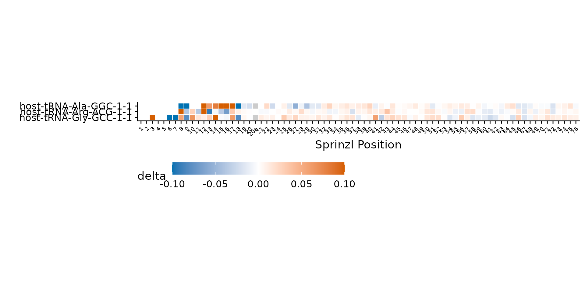
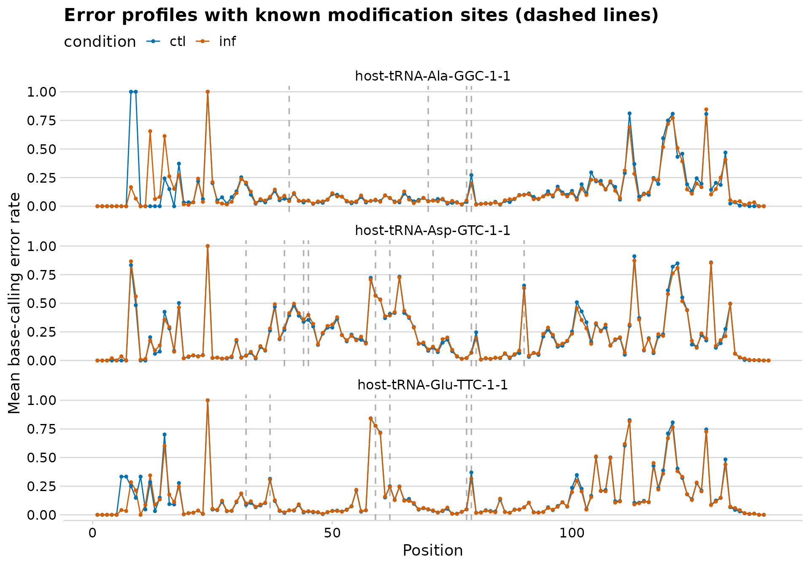
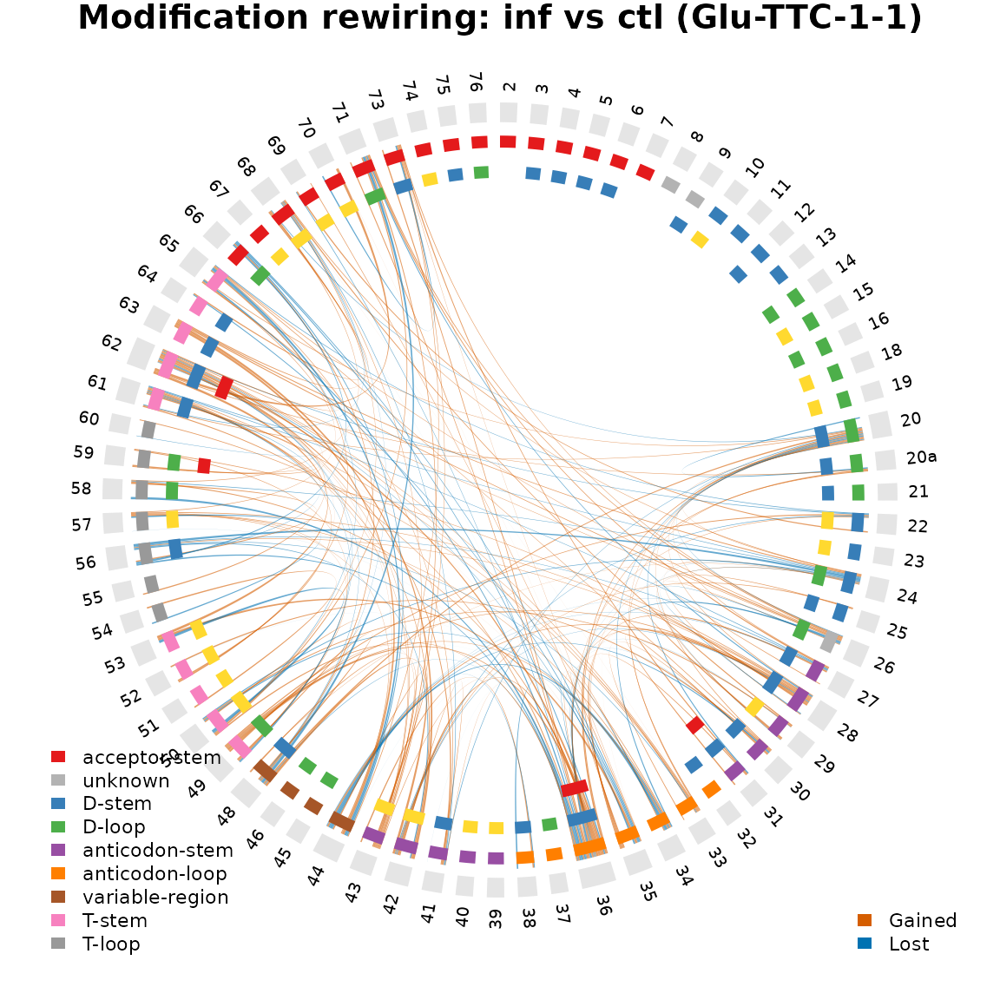

Analyzing *E. coli* tRNAs during T4 phage infection
Source:vignettes/ecoli-phage.Rmd
ecoli-phage.RmdOverview
This vignette demonstrates clover’s analysis workflow using E.
coli tRNA sequencing data from a T4 phage infection time-course
experiment. The test dataset includes 6 samples: 3 uninfected controls
(ctl) and 3 T4-infected (inf) wild-type E.
coli at 15 minutes post-infection, with 3 biological replicates per
condition.
Loading data with create_clover()
The simplest way to load results from the aa-tRNA-seq-pipeline
is with create_clover(), which reads a pipeline
configuration file and assembles a
SummarizedExperiment.
config_path <- clover_example("ecoli/config.yaml")
sample_info <- data.frame(
sample_id = c(
"wt-15-ctl-01",
"wt-15-ctl-02",
"wt-15-ctl-03",
"wt-15-inf-01",
"wt-15-inf-02",
"wt-15-inf-03"
),
condition = rep(c("ctl", "inf"), each = 3),
replicate = rep(1:3, 2)
)
se <- create_clover(
config_path,
types = c("charging", "bcerror", "odds_ratios"),
sample_info = sample_info
)
se
#> class: SummarizedExperiment
#> dim: 190 6
#> metadata(5): config charging bcerror odds_ratios fasta
#> assays(1): counts
#> rownames(190): host-tRNA-Ala-GGC-1-1 host-tRNA-Ala-GGC-1-1-uncharged
#> ... phage-tRNA-Thr-TGT phage-tRNA-Thr-TGT-uncharged
#> rowData names(2): tRNA seq_length
#> colnames(6): wt-15-ctl-01 wt-15-ctl-02 ... wt-15-inf-02 wt-15-inf-03
#> colData names(3): sample_id condition replicateThe SE object contains:
- assay “counts”: abundance count matrix (charged + uncharged reads)
- colData: sample metadata with condition labels
- metadata: list with raw charging data, bcerror, odds ratios, FASTA reference, and pipeline config
SummarizedExperiment::assay(se, "counts")[1:5, ]
#> wt-15-ctl-01 wt-15-ctl-02 wt-15-ctl-03
#> host-tRNA-Ala-GGC-1-1 298 397 113
#> host-tRNA-Ala-GGC-1-1-uncharged 4393 5014 883
#> host-tRNA-Ala-GGC-1-2 1625 1506 265
#> host-tRNA-Ala-GGC-1-2-uncharged 4391 5130 862
#> host-tRNA-Ala-TGC-1-1 518 610 160
#> wt-15-inf-01 wt-15-inf-02 wt-15-inf-03
#> host-tRNA-Ala-GGC-1-1 189 347 1253
#> host-tRNA-Ala-GGC-1-1-uncharged 3640 7133 12837
#> host-tRNA-Ala-GGC-1-2 1299 1857 4409
#> host-tRNA-Ala-GGC-1-2-uncharged 3637 7411 12592
#> host-tRNA-Ala-TGC-1-1 233 553 1706
SummarizedExperiment::colData(se)
#> DataFrame with 6 rows and 3 columns
#> sample_id condition replicate
#> <character> <character> <integer>
#> wt-15-ctl-01 wt-15-ctl-01 ctl 1
#> wt-15-ctl-02 wt-15-ctl-02 ctl 2
#> wt-15-ctl-03 wt-15-ctl-03 ctl 3
#> wt-15-inf-01 wt-15-inf-01 inf 1
#> wt-15-inf-02 wt-15-inf-02 inf 2
#> wt-15-inf-03 wt-15-inf-03 inf 3Differential tRNA abundance
We can test for differential tRNA abundance between infected and uninfected conditions using the DESeq2 wrappers.
counts <- SummarizedExperiment::assay(se, "counts")
coldata <- as.data.frame(SummarizedExperiment::colData(se))
dds <- run_deseq(counts, coldata, design = ~condition)
#> estimating size factors
#> estimating dispersions
#> gene-wise dispersion estimates
#> mean-dispersion relationship
#> final dispersion estimates
#> fitting model and testing
res <- tidy_deseq_results(dds, contrast = c("condition", "inf", "ctl"))
plot_volcano(res)
Volcano plot of differential tRNA abundance (inf vs ctl).
Top changing tRNAs
res |>
filter(!is.na(padj)) |>
arrange(pvalue) |>
head(10) |>
select(tRNA, log2FoldChange, pvalue, padj, significant)
#> # A tibble: 10 × 5
#> tRNA log2FoldChange pvalue padj significant
#> <chr> <dbl> <dbl> <dbl> <lgl>
#> 1 phage-tRNA-Ile2-CAT 5.33 2.85e-17 5.31e-15 TRUE
#> 2 phage-tRNA-Gln-TTG 3.68 5.52e-13 5.13e-11 TRUE
#> 3 phage-tRNA-Arg-TCT 5.04 3.36e- 9 2.09e- 7 TRUE
#> 4 phage-tRNA-Pro-TGG-uncharged 1.80 1.99e- 7 9.24e- 6 TRUE
#> 5 phage-tRNA-Pro-TGG 3.25 2.67e- 6 9.91e- 5 TRUE
#> 6 phage-tRNA-Thr-TGT 4.29 3.73e- 6 1.16e- 4 TRUE
#> 7 phage-tRNA-Leu-TAA 3.75 8.90e- 6 2.37e- 4 TRUE
#> 8 phage-tRNA-Leu-TAA-uncharged 2.08 6.40e- 5 1.49e- 3 TRUE
#> 9 phage-tRNA-Ser-TGA 3.86 9.51e- 5 1.97e- 3 TRUE
#> 10 phage-tRNA-Arg-TCT-uncharged 1.84 2.56e- 4 4.76e- 3 TRUEDifferential charging analysis
A unique feature of nanopore tRNA-seq is the ability to measure charging levels. We can test whether the ratio of charged to uncharged reads changes upon infection.
charging <- S4Vectors::metadata(se)$charging
charging$condition <- ifelse(grepl("ctl", charging$sample_id), "ctl", "inf")
ratio_diff <- compute_charging_diffs(
charging,
numerator = "inf",
denominator = "ctl",
min_count = 50,
n_top = 20
)
plot_charging_diffs(ratio_diff)
Change in charging ratio (infected - control) per tRNA.
Base-calling error profiles
Base-calling error rates reflect RNA modifications that cause the nanopore basecaller to misidentify bases. Comparing error profiles between conditions can reveal modification changes.
bcerror <- S4Vectors::metadata(se)$bcerror
# Focus on charged tRNAs (not uncharged variants)
bcerror_charged <- bcerror |>
filter(!grepl("-uncharged$", ref))
# Calculate mean error rate per position per condition
bcerror_charged <- bcerror_charged |>
mutate(condition = ifelse(grepl("ctl", sample_id), "ctl", "inf"))
bcerror_summary <- bcerror_charged |>
group_by(ref, pos, condition) |>
summarise(
mean_error = mean(error_rate),
mean_mis = mean(mis),
.groups = "drop"
)
# Plot error profiles for a few tRNAs
plot_trnas <- c(
"host-tRNA-Ala-GGC-1-1",
"host-tRNA-Asp-GTC-1-1",
"host-tRNA-Glu-TTC-1-1"
)
plot_bcerror_profile(bcerror_summary, refs = plot_trnas)
Base-calling error profiles for selected tRNAs.
Error rate difference heatmap
# Compute delta (inf - ctl)
bcerror_delta <- bcerror_summary |>
select(ref, pos, condition, mean_error) |>
pivot_wider(names_from = condition, values_from = mean_error) |>
mutate(delta = inf - ctl)
# Add Sprinzl coordinates for position ordering
sprinzl <- read_sprinzl_coords(
clover_example("sprinzl/ecoliK12_global_coords.tsv.gz")
)
# Match tRNA names: strip "host-" prefix
bcerror_delta <- bcerror_delta |>
mutate(trna_id = sub("^host-", "", ref))
# Join with sprinzl coords to get structural labels
bcerror_sprinzl <- bcerror_delta |>
left_join(
sprinzl |> select(trna_id, seq_index, sprinzl_label),
by = c("trna_id", "pos" = "seq_index")
) |>
filter(!is.na(sprinzl_label))
plot_mod_heatmap(
bcerror_sprinzl,
value_col = "delta",
ref_col = "ref",
color_limits = c(-0.1, 0.1)
)
Difference in mean base-calling error (inf - ctl) across all tRNAs and positions.
Modification annotations from MODOMICS
The MODOMICS database
catalogs known RNA modifications. fetch_modomics_mods()
downloads tRNA modification data for a given organism and maps the
modification positions onto your reference sequences using pairwise
alignment.
fasta_path <- S4Vectors::metadata(se)$config$fasta
mods <- fetch_modomics_mods(fasta_path, organism = "Escherichia coli")
#> Fetching MODOMICS modification dictionary.
#> Fetching MODOMICS tRNA sequences for "Escherichia coli".
#> Processing 182 MODOMICS sequences.
#> Matching MODOMICS sequences to reference FASTA.
#> Found 695 modification annotations.
mods
#> # A tibble: 695 × 4
#> ref pos mod_full mod1
#> <chr> <int> <chr> <chr>
#> 1 host-tRNA-Ala-TGC-1-1 41 dihydrouridine D
#> 2 host-tRNA-Ala-TGC-1-1 58 uridine 5-oxyacetic acid cmo5U
#> 3 host-tRNA-Ala-TGC-1-1 70 7-methylguanosine m7G
#> 4 host-tRNA-Ala-TGC-1-1 78 5-methyluridine m5U
#> 5 host-tRNA-Ala-TGC-1-1 79 pseudouridine Y
#> 6 host-tRNA-Ala-GGC-1-1 41 dihydrouridine D
#> 7 host-tRNA-Ala-GGC-1-1 70 7-methylguanosine m7G
#> 8 host-tRNA-Ala-GGC-1-1 78 5-methyluridine m5U
#> 9 host-tRNA-Ala-GGC-1-1 79 pseudouridine Y
#> 10 host-tRNA-Arg-ACG-1-1 32 4-thiouridine s4U
#> # ℹ 685 more rowsWe can overlay known modifications onto the base-calling error profiles. Positions with known modifications often correspond to elevated error rates, since the basecaller misidentifies modified nucleotides.
plot_bcerror_profile(bcerror_summary, refs = plot_trnas, mods = mods)
Base-calling error profiles with known modification positions marked.
Modification co-occurrence (odds ratios)
Odds ratios measure whether modifications at pairs of positions tend to co-occur on the same read. Positive log odds ratios indicate co-occurrence; negative indicate mutual exclusivity.
or_data <- S4Vectors::metadata(se)$odds_ratios
glimpse(or_data)
#> Rows: 63,823
#> Columns: 8
#> $ ref <chr> "host-tRNA-Asp-GTC-1-1", "host-tRNA-Asp-GTC-1-1", "host…
#> $ pos1 <dbl> 20, 20, 20, 20, 20, 20, 20, 20, 20, 20, 20, 20, 20, 20,…
#> $ pos2 <dbl> 23, 26, 28, 31, 32, 35, 36, 37, 39, 40, 43, 45, 47, 48,…
#> $ odds_ratio <dbl> 0, 0, 0, 0, 0, 0, 0, 0, 0, 0, 0, 0, 0, 0, 0, 0, 0, 0, 0…
#> $ log_odds_ratio <dbl> -23.02585, -23.02585, -23.02585, -23.02585, -23.02585, …
#> $ p_value <dbl> 1, 1, 1, 1, 1, 1, 1, 1, 1, 1, 1, 1, 1, 1, 1, 1, 1, 1, 1…
#> $ total_obs <dbl> 1488, 1488, 1488, 1488, 1488, 1488, 1488, 1488, 1488, 1…
#> $ sample_id <chr> "wt-15-ctl-01", "wt-15-ctl-01", "wt-15-ctl-01", "wt-15-…Chord diagram: single sample
The Sprinzl coordinate files use RNA anticodon notation (e.g.,
UUC) while the pipeline uses DNA notation (e.g.,
TTC). The pipeline also adds a host- prefix.
We need to account for these naming differences when matching.
# Pick one tRNA and one sample
or_single <- or_data |>
filter(
ref == "host-tRNA-Glu-TTC-1-1",
sample_id == "wt-15-ctl-01"
)
# Get sprinzl coords: note UUC (RNA) vs TTC (DNA) in anticodon
sprinzl_glu <- sprinzl |>
filter(trna_id == "tRNA-Glu-UUC-1-1")
# Filter modifications for this tRNA
mods_glu <- mods |>
filter(ref == "host-tRNA-Glu-TTC-1-1")
plot_chord_or(
or_single,
or_cutoff = 1.0,
p_cutoff = 0.01,
min_obs = 100,
sprinzl_coords = sprinzl_glu,
mods = mods_glu,
title = "host-tRNA-Glu-TTC-1-1 (ctl-01)"
)Modification co-occurrence network for a single tRNA in one sample.
Chord diagram: modification rewiring between conditions
We can compare modification networks between conditions using the ratio of odds ratios (ROR). Positive log ROR indicates gained modification dependencies in the infected condition; negative indicates lost dependencies.
# Add condition labels
or_with_cond <- or_data |>
mutate(condition = ifelse(grepl("ctl", sample_id), "ctl", "inf")) |>
filter(ref == "host-tRNA-Glu-TTC-1-1")
# Compute ratio of odds ratios
ror <- compute_ror(
or_with_cond,
numerator = "inf",
denominator = "ctl",
min_obs = 100
)
plot_chord_ror(
ror,
ror_cutoff = 0.5,
sprinzl_coords = sprinzl_glu,
mods = mods_glu,
title = "Modification rewiring: inf vs ctl (Glu-TTC-1-1)"
)
Modification rewiring between control and infected conditions.
Loading data step by step
For more control, you can load each data type individually instead of
using create_clover().
# Parse the pipeline config
config <- read_pipeline_config(clover_example("ecoli/config.yaml"))
config$samples
#> # A tibble: 6 × 2
#> sample_id data_path
#> <chr> <chr>
#> 1 wt-15-ctl-01 /data/wt-15-ctl-01
#> 2 wt-15-ctl-02 /data/wt-15-ctl-02
#> 3 wt-15-ctl-03 /data/wt-15-ctl-03
#> 4 wt-15-inf-01 /data/wt-15-inf-01
#> 5 wt-15-inf-02 /data/wt-15-inf-02
#> 6 wt-15-inf-03 /data/wt-15-inf-03
# List expected output files
files <- list_pipeline_files(
config,
types = c("charging", "bcerror", "odds_ratios")
)
files
#> # A tibble: 18 × 3
#> sample_id type path
#> <chr> <chr> <chr>
#> 1 wt-15-ctl-01 charging /home/runner/work/_temp/Library/clover/extdata/ecol…
#> 2 wt-15-ctl-02 charging /home/runner/work/_temp/Library/clover/extdata/ecol…
#> 3 wt-15-ctl-03 charging /home/runner/work/_temp/Library/clover/extdata/ecol…
#> 4 wt-15-inf-01 charging /home/runner/work/_temp/Library/clover/extdata/ecol…
#> 5 wt-15-inf-02 charging /home/runner/work/_temp/Library/clover/extdata/ecol…
#> 6 wt-15-inf-03 charging /home/runner/work/_temp/Library/clover/extdata/ecol…
#> 7 wt-15-ctl-01 bcerror /home/runner/work/_temp/Library/clover/extdata/ecol…
#> 8 wt-15-ctl-02 bcerror /home/runner/work/_temp/Library/clover/extdata/ecol…
#> 9 wt-15-ctl-03 bcerror /home/runner/work/_temp/Library/clover/extdata/ecol…
#> 10 wt-15-inf-01 bcerror /home/runner/work/_temp/Library/clover/extdata/ecol…
#> 11 wt-15-inf-02 bcerror /home/runner/work/_temp/Library/clover/extdata/ecol…
#> 12 wt-15-inf-03 bcerror /home/runner/work/_temp/Library/clover/extdata/ecol…
#> 13 wt-15-ctl-01 odds_ratios /home/runner/work/_temp/Library/clover/extdata/ecol…
#> 14 wt-15-ctl-02 odds_ratios /home/runner/work/_temp/Library/clover/extdata/ecol…
#> 15 wt-15-ctl-03 odds_ratios /home/runner/work/_temp/Library/clover/extdata/ecol…
#> 16 wt-15-inf-01 odds_ratios /home/runner/work/_temp/Library/clover/extdata/ecol…
#> 17 wt-15-inf-02 odds_ratios /home/runner/work/_temp/Library/clover/extdata/ecol…
#> 18 wt-15-inf-03 odds_ratios /home/runner/work/_temp/Library/clover/extdata/ecol…
# Read individual files
charging_one <- read_charging(files$path[
files$sample_id == "wt-15-ctl-01" &
files$type == "charging"
])
head(charging_one)
#> # A tibble: 6 × 5
#> tRNA counts_charged counts_uncharged cpm_charged cpm_uncharged
#> <chr> <dbl> <dbl> <dbl> <dbl>
#> 1 host-tRNA-Ala-GGC-1… 174 124 270. 193.
#> 2 host-tRNA-Ala-GGC-1… 1173 3220 1824. 5006.
#> 3 host-tRNA-Ala-GGC-1… 818 807 1272. 1255.
#> 4 host-tRNA-Ala-GGC-1… 1205 3186 1873. 4953.
#> 5 host-tRNA-Ala-TGC-1… 351 167 546. 260.
#> 6 host-tRNA-Ala-TGC-1… 1390 2395 2161. 3723.
# Read a single bcerror file
bcerr_one <- read_bcerror(files$path[
files$sample_id == "wt-15-ctl-01" &
files$type == "bcerror"
])
head(bcerr_one)
#> # A tibble: 6 × 12
#> ref pos cov a_freq t_freq g_freq c_freq mis ins del error_rate
#> <fct> <int> <dbl> <dbl> <dbl> <dbl> <dbl> <dbl> <dbl> <dbl> <dbl>
#> 1 host-tRN… 1 0 0 0 0 0 0 0 0 0
#> 2 host-tRN… 2 0 0 0 0 0 0 0 0 0
#> 3 host-tRN… 3 0 0 0 0 0 0 0 0 0
#> 4 host-tRN… 4 1 1 0 0 0 0 0 0 0
#> 5 host-tRN… 5 1 1 0 0 0 0 0 0 0
#> 6 host-tRN… 6 1 0 0 1 0 0 0 0 0
#> # ℹ 1 more variable: mean_qual <dbl>Session info
sessionInfo()
#> R version 4.5.2 (2025-10-31)
#> Platform: x86_64-pc-linux-gnu
#> Running under: Ubuntu 24.04.3 LTS
#>
#> Matrix products: default
#> BLAS: /usr/lib/x86_64-linux-gnu/openblas-pthread/libblas.so.3
#> LAPACK: /usr/lib/x86_64-linux-gnu/openblas-pthread/libopenblasp-r0.3.26.so; LAPACK version 3.12.0
#>
#> locale:
#> [1] LC_CTYPE=C.UTF-8 LC_NUMERIC=C LC_TIME=C.UTF-8
#> [4] LC_COLLATE=C.UTF-8 LC_MONETARY=C.UTF-8 LC_MESSAGES=C.UTF-8
#> [7] LC_PAPER=C.UTF-8 LC_NAME=C LC_ADDRESS=C
#> [10] LC_TELEPHONE=C LC_MEASUREMENT=C.UTF-8 LC_IDENTIFICATION=C
#>
#> time zone: UTC
#> tzcode source: system (glibc)
#>
#> attached base packages:
#> [1] stats graphics grDevices utils datasets methods base
#>
#> other attached packages:
#> [1] tidyr_1.3.2 dplyr_1.2.0 clover_0.0.0.9000
#>
#> loaded via a namespace (and not attached):
#> [1] tidyselect_1.2.1 farver_2.1.2
#> [3] Biostrings_2.78.0 S7_0.2.1
#> [5] fastmap_1.2.0 digest_0.6.39
#> [7] lifecycle_1.0.5 pwalign_1.6.0
#> [9] magrittr_2.0.4 compiler_4.5.2
#> [11] rlang_1.1.7 sass_0.4.10
#> [13] tools_4.5.2 utf8_1.2.6
#> [15] yaml_2.3.12 knitr_1.51
#> [17] S4Arrays_1.10.1 labeling_0.4.3
#> [19] bit_4.6.0 curl_7.0.0
#> [21] DelayedArray_0.36.0 RColorBrewer_1.1-3
#> [23] abind_1.4-8 BiocParallel_1.44.0
#> [25] withr_3.0.2 purrr_1.2.1
#> [27] BiocGenerics_0.56.0 desc_1.4.3
#> [29] grid_4.5.2 stats4_4.5.2
#> [31] colorspace_2.1-2 ggplot2_4.0.2
#> [33] scales_1.4.0 SummarizedExperiment_1.40.0
#> [35] cli_3.6.5 rmarkdown_2.30
#> [37] crayon_1.5.3 ragg_1.5.0
#> [39] generics_0.1.4 tzdb_0.5.0
#> [41] cachem_1.1.0 stringr_1.6.0
#> [43] parallel_4.5.2 XVector_0.50.0
#> [45] matrixStats_1.5.0 vctrs_0.7.1
#> [47] Matrix_1.7-4 jsonlite_2.0.0
#> [49] IRanges_2.44.0 hms_1.1.4
#> [51] S4Vectors_0.48.0 bit64_4.6.0-1
#> [53] ggrepel_0.9.6 systemfonts_1.3.1
#> [55] locfit_1.5-9.12 jquerylib_0.1.4
#> [57] glue_1.8.0 pkgdown_2.2.0
#> [59] codetools_0.2-20 cowplot_1.2.0
#> [61] stringi_1.8.7 gtable_0.3.6
#> [63] shape_1.4.6.1 GenomicRanges_1.62.1
#> [65] tibble_3.3.1 pillar_1.11.1
#> [67] rappdirs_0.3.4 htmltools_0.5.9
#> [69] Seqinfo_1.0.0 circlize_0.4.17
#> [71] R6_2.6.1 httr2_1.2.2
#> [73] textshaping_1.0.4 vroom_1.7.0
#> [75] evaluate_1.0.5 lattice_0.22-7
#> [77] Biobase_2.70.0 readr_2.1.6
#> [79] bslib_0.10.0 Rcpp_1.1.1
#> [81] SparseArray_1.10.8 DESeq2_1.50.2
#> [83] xfun_0.56 fs_1.6.6
#> [85] MatrixGenerics_1.22.0 forcats_1.0.1
#> [87] pkgconfig_2.0.3 GlobalOptions_0.1.3